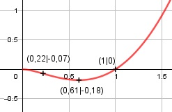

Aufgabe 154 f(x) = x2 * ln x Produktregel erste Ableitung: u = x2, u' = 2x 1 v = ln x, v' = --- x 1 f'(x) = 2x * ln x + --- * x2 = 2x * ln x + x x f'(x) = x * (2 * ln x + 1) Produktregel zweite Ableitung: u = x, u' = 1 2 v = 2 * ln x + 1, v' = --- x 2 = 1 * (2 * ln x + 1) + --- * x x f''(x) = 2 * ln x + 3 Dritte Ableitung: 2 f'''(x) = --- x Wegen ln x, muss x > 0 sein Definitionsbereich: 0 < x < ∞ Wertebereich: f(x) wird am kleinsten, wenn x = 0,61 (Extrempunkt) und f(0,61) = -0,18 --> -0,18 ≤ f(x) < ∞ Symmetrie zur y-Achse bzw. zum Punkt (0|0): f(-x) = (-x)2 * ln (-x) = x2 * ln (-x) ≠ f(x) --> keine Achsensymmetrie -f(-x) = -x2 * ln (-x) ≠ f(x) --> keine Punktsymmetrie Nullstellen: f(x) = 0 x2 * ln x = 0 x2 = 0 --> |ⱱ x1,2 = 0 --> keine Lösung, außerhalb des Definitionsbereiches ln x = 0 x = e0 x = 1 N(1|0) Schnittpunkt mit der y-Achse: x = 0 02 * ln 0 --> keine Lösung --> kein Schnittpunkt Extrempunkte: f'(x) = 0 x * (2 * ln (x) + 1) = 0 x = 0 --> keine Lösung, außerhalb des Definitionsbereiches 2 * ln (x) + 1 = 0 |-1 2 * ln x = -1 |:2 ln x = -0,5 x = e-0,5 = 0,61 f(0,61) = 0,612 * ln 0,61 = -0,18 f''(0,61) = 2 * ln (0,61) + 3 > 0 --> Tiefpunkt (0,61|-0,18) Wendepunkte: f''(x) = 0 2 * ln (x) + 3 = 0 |-3 2 * ln (x) = -3 |:2 ln x = -1,5 x = e-1,5 = 0,22 f(0,22) = 0,222 * ln (0,22) = -0,07 2 f'''(0,22) = ------ ≠ 0 --> WP(0,22|-0,07) 0,22 Graph:
